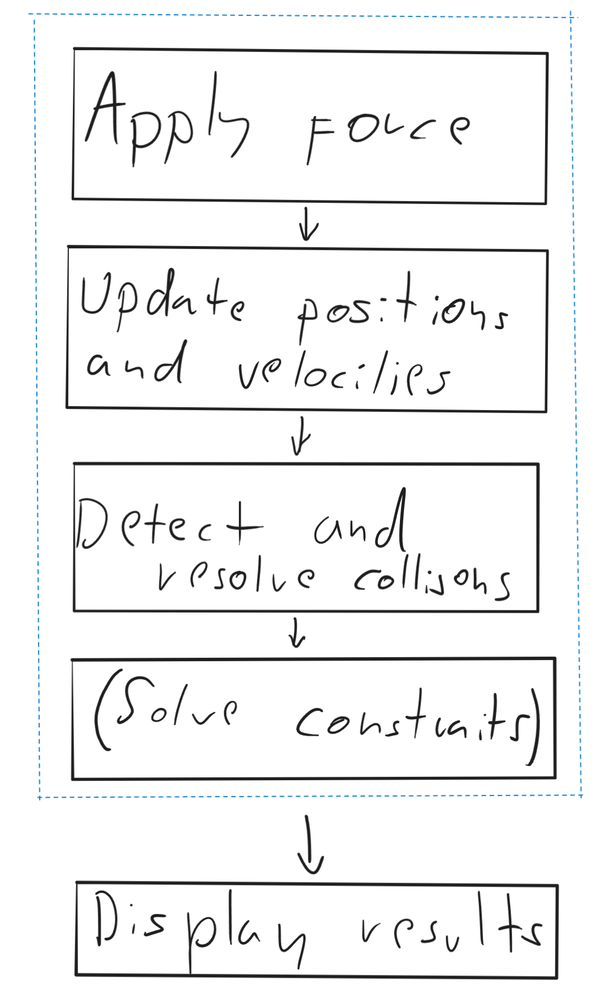
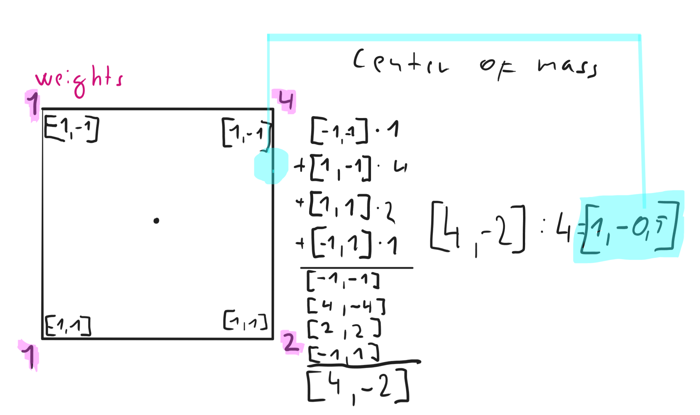
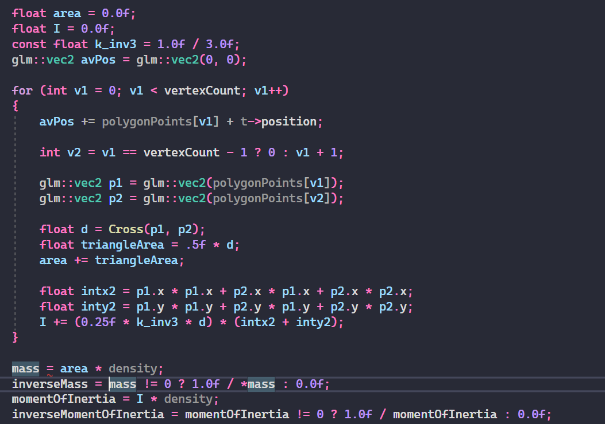
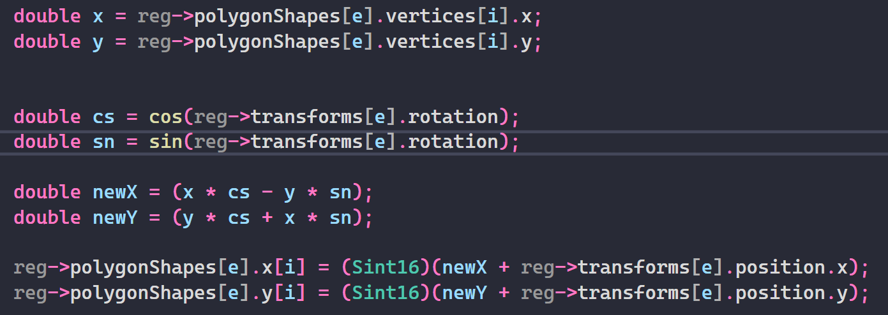

Basics, and setting up bodies
What even is rigid body?
A rigid body is a perfect representation of a body that does not deform or change shape. While this is imposible in real world it looks good enough for games and it has better performance.
Three Laws of Motion:
- Inertia - An object at rest remains at rest, and an object in motion remains in motion at constant speed and in a straight line unless acted on by an unbalanced force.
- Force - The acceleration of an object depends on the mass of the object and the amount of force applied. This can be written as acceleration = force / mass
- Action and Reactioin - Whenever one object exerts a force on a second object, the second object exerts an equal and opposite force on the first.
Order of events
The order of actions after setting them up is as follows:
- Apply forces - Simply apply vectors by adding them to force vector which is reseted every frame
- Update velocities and then positions - Implicit(Backwards) euler, numerical integration that first adds force to linear and angular velocity and then it changes position and rotation
- Detect and resolve collision
- Solve constrains(Not covered in these blogs yet)
- Display results
This will also be the order I will go through this... In this blog I just talk about setting up the bodies.
Basics of rigid bodies
So lets say we have a rigidbody component which will hold most of the variables.
What are the variables it will keep?
There are two main variables which will be defined on set up: Mass and moment of inertia.
Mass is self explanatory and moment of inertia defines how much force needs to be applied to rotate rigid
body.
We will also have inverse mass and inverse moment of inertia which is just 1/mass and 1/inertia.
There will ofcourse be some other variables like angular drag or linear drag but I will talk about
that later.
After that we need something to hold our variables that are changed every frame. This will
include force, linear velocity, torque and angular velocity. Force and torque(in nutshell force for
rotation) are recalculated every frame.
As for both velocities there are just changed during frame.
Obviously we can't forget position and rotation. I would advise not keeping them in rigidbody
because usually the simulation won't be for rigidbodies only and position and rotation(I like it in radians
instead of degrees) should be stored in transform component.
If you're wondering where the individual polygons will be stored that depends on you. Maybe you will want it in polygon collider component(I prefer it this way) or maybe in shape component which could be used for both collision and drawing the polygon, you have to decide for your self.
Center of mass
To calculate center of mass we will simply get average of all the vertices in polygon. If you want you can give the vertices weight... To do this you will keep a vector, let's call it averageVector. You will loop through all the vertices and add their position multiplied by their weight to the averageVector. After the loop is done you will divide the averageVector by the number of vertices in polygon.
Moment of inertia and mass
In order to calculate mass you need to find the area of polygon and multiply it by density. To calculate moment of inertia of a polygon you will need to copy this code, because I could't get it working my own way, this way seems just fine:
Rotation

Each frame we will have to calculate rotated vertices, once at start for collider and once in the end for displaying the result. Now how to rotate the vertices? First of all we need to have a list of vertices that are just vectors offset from position, that should be the middle/center of mass of the body(the point where all the vertices will be rotated around). Also we will have to keep the rotated values in another array, because we can't overwrite the vertices array(we will use it every frame). So we will loop through all vertices and we will save the results in an array, the equation for calculating rotated vertex is as follows:
REMEMBER: angle has to always be in radians
NewX = X * cos(angle) - Y * sin(angle)
NewY = Y * cos(angle) + X * sin(angle)
If you already want to add the position to it so that you won't have to loop through them again you simply do this:
NewX = NewX + Position.X
NewY = NewY + Position.Y
Summary
This should give you enough information to calculate some of the most important values in order to create your own oriented rigid body physics. In the next blog I will tlk about forces and velocities.